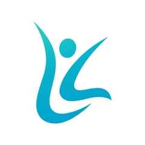

Medicina
ocupacional
Cuidado com a saúde de quem faz sua empresa acontecer.
- Exames admissionais e periódicos
- Retorno e mudança de função
- Exames demissionais e ASO
Exames, laudos, treinamentos e gestão de SST. Soluções integradas para uma equipe mais saudável e um ambiente de trabalho mais seguro.
16 perguntas, cerca de 4 minutos. O resultado sai na hora, com o nível de exposição da sua empresa, os riscos que as respostas apontam e quanto eles podem custar em multas.
Sigiloso: as respostas ficam só com a equipe técnica da Life Laboral.
Do exame admissional à prevenção de riscos: encontre o cuidado certo para cada etapa da jornada de trabalho.
Cuidado com a saúde de quem faz sua empresa acontecer.
Informação técnica para orientar decisões e ações preventivas.
Assessoria para identificar riscos e promover ambientes seguros.
Conhecimento que se transforma em atitudes mais seguras.

A Life Laboral é a evolução da Life Ocupacional. Nosso compromisso continua o mesmo: promover a saúde e o bem-estar dos trabalhadores, apoiando empresas na construção de ambientes mais seguros.
Em São Caetano do Sul, reunimos atendimento humanizado e consultoria especializada para conectar medicina ocupacional, segurança e capacitação.

Mais soluções, um só grupo. Saúde ocupacional, segurança do trabalho e capacitação profissional unidas para cuidar da sua empresa.
Conheça as soluções integradasFale com nossa equipe sobre sua empresa e os serviços que procura.
Receba orientação e uma proposta alinhada às necessidades da sua operação.
Conte com suporte para cuidar da saúde e da segurança dos seus colaboradores.
Conte com a Life Laboral para encontrar soluções em saúde ocupacional e segurança do trabalho.
Exames admissionais, periódicos, de mudança de função, retorno ao trabalho e demissionais, além de coleta de exames laboratoriais e de imagem. Consulte a equipe sobre o atendimento adequado.
Sim. A Life Laboral oferece soluções integradas em medicina ocupacional, laudos, programas, treinamentos e gestão de SST. Converse com a equipe para definir o escopo para sua empresa.
São 16 perguntas sobre a sua empresa, cerca de 4 minutos. O resultado sai na hora, com o nível de exposição, os riscos apontados e as multas de referência. Se quiser, deixe o contato e a equipe técnica retorna com o plano para eliminar esses riscos.
Preencha o formulário desta página ou entre em contato pelo telefone (11) 4226-0222.
Vamos encontrar a solução para a sua equipe?